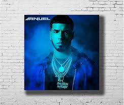
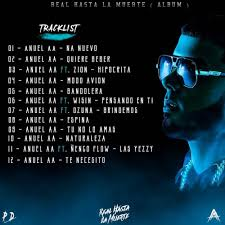

Anuel AA comenzó su carrera musical en el 2011. El primer tema que sacó al mercado se llamó “Demonia”, el cual no tuvo mayor relevancia.
En el 2012, Anuel firmó contrato con Maybach Music (bajo Spiff TV), un sello discográfico fundado por el rapero estadounidense Rick Ross. El primer mixtape de Anuel fue "Real Hasta la Muerte"
Estrenado el 29 de febrero de 2016, el mixtape cuenta con 13 sencillos recopilatorios, y cuenta con las colaboraciones de grandes artistas del género urbano como Ozuna , Ñengo Flow, Arcángel, De La Ghetto , Lito Kirino, Kendo Kaponi, Lary Over, Bryant Myers, Anonimus, Brytiago y Almighty. El 3 de abril de 2016, el cantante fue detenido por posesión de armas, al salir de un club nocturno en Puerto Rico. Sus fans crearon desde entonces la campaña "Free Anuel" para pedir su liberación

El 12 de mayo de 2018, Anuel AA fue puesto en libertad, después de estar dos años, un mes y nueve días, pero volvió a prisión 22 días después, hasta cumplir con el resto de su sentencia. El 17 de julio de 2018, Anuel AA salió de prisión definitivamente, cumpliendo su condena de 30 meses. A su vez, ese día lanzó un álbum inédito y sorpresa titulado:”Real Hasta La Muerte”. Luego realizó diversas colaboraciones, entre estas junto a Tekashi, 6ix9ine. También hizo “Culpables”, junto a Karol G .
 